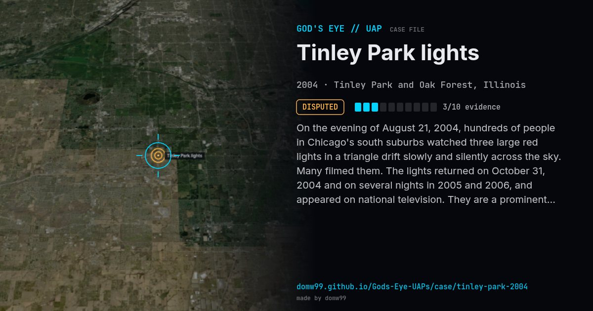

Tinley Park lights
DISPUTED

On the evening of August 21, 2004, hundreds of people in Chicago's south suburbs watched three large red lights in a triangle drift slowly and silently across the sky. Many filmed them. The lights returned on October 31, 2004 and on several nights in 2005 and 2006, and appeared on national television. They are a prominent "black triangle" style case with plenty of video.
Explanation
Commonly attributed to balloons or kites carrying lights or flares, which match the slow drift and the colour. No one has come forward, and the cause has not been confirmed.
What was seen
Shape: Three to four red lights in a triangle
Witnesses: Hundreds in the south suburbs of Chicago
Duration: Up to 30 minutes, several nights
Sources
Browse
- United States
- 2000s
- Disputed
- Recurring lights
- Many independent witnesses
- Video footage
- Lights and fireballs
- Triangles and V shapes